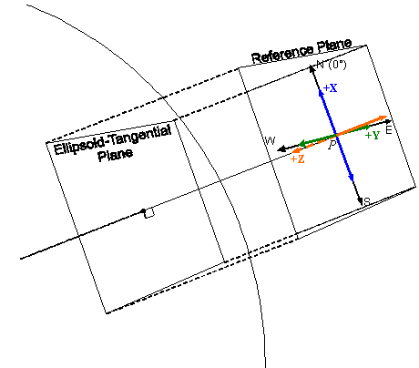
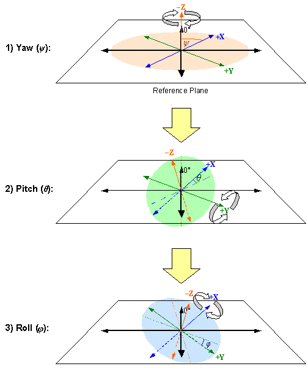

CIGI Host Emulator 3
|
CIGI Host Emulator 3 |
The orientation of an entity, view, or other object with respect to the geodetic coordinate system is specified relative to a reference plane that is parallel to an ellipsoid-tangential plane. The reference plane passes through the entity’s reference point. A right-hand coordinate system can be defined so that the X, Y, and Z axes correspond to North, East, and down (toward the ellipsoid), respectively. This is called a North-East-Down (NED) Cartesian coordinate system and is shown below:

Local Geodetic Reference Plane with NED Coordinate System
The order of rotation is about the
Z, Y, and then X axes (i.e., yaw, pitch, and then roll) as described below. This discussion assumes an entity but also applies to views, submodels, and other objects.An entity’s yaw,
ψ, is the measure of the angle formed from True North to the entity’s +X axis. This angle is specified in degrees and is positive clockwise if looking along the +Z axis.An entity’s pitch,
θ, is the measure of the angle between the reference plane and the entity’s +X axis. This angle is specified in degrees and is positive above (away from the ellipsoid) the reference plane.Roll,
φ, is the measure of the angle between the reference plane and the entity’s +Y axis along a plane perpendicular to the entity’s X axis. In other words, it is the angle of rotation about the X axis after yaw and pitch have been applied. Roll is also specified in degrees and is positive clockwise from the point of view of looking along the +X axis.The figure below illustrates the rotation about each axis. Note that the
Z axis is labeled in the negative (–) direction (above the reference plane) for clarity. Dashed lines indicate that the line extends below the reference plane.
Rotation in NED Coordinate System
|
© 2008 The Boeing Company |
rev 3.3.0 |